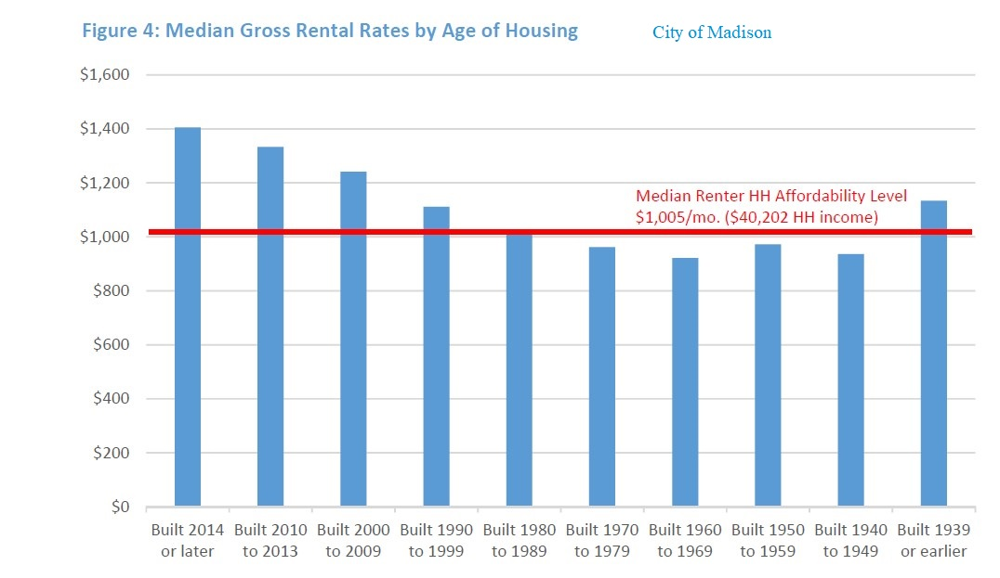

Madison Needs to Improve Public Transit Without Displacement - Part I
by John Swindle and Susan De Vos | January 25, 2021

Transit advocates in Madison and elsewhere are quick to point out that traveling with one less car can save a household on average over $9,000 a year (based on national 2019 figures for traveling 15,000 miles), whether that household goes from having two to one car, one to no car or just not getting a car in the first place. Transit advocates also tout the socially inclusive nature of a public system that serves people of all ages, incomes, ethnicities, and physical abilities. And they argue that even riding diesel, rather than electric, buses can substantially cut down on one's carbon footprint while enabling road diets and the reclamation of public space disproportionately allocated to car parking. After all, the city's 2018 Comprehensive Plan's #1 transportation strategy (p. 30) is "Improve transit service, especially to peripheral employment and residential locations, with a focus on reducing the travel time for transit dependent populations." But there can be a huge blind spot to that thinking when transit advocates fail to recognize the pernicious, if unintended, effect improved transit can have on a neighborhood—displacement. Unfettered, improving neighborhood amenities with public dollars can cause housing prices to skyrocket, pricing newcomers out of the market and displacing existing residents. Neighborhood improvements can leave an opening for predators to exploit the situation, nefariously driving a wedge between transit advocates and low income communities. In this way, public transit, often championed as a tool for combating gentrification, can become a driving force behind gentrification, and the displacement of communities. A recent example of an exploitable wedge was the controversy in 2019 of enacting a perpetual $40 addition to the annual vehicle registration fee (VRF). Many transit advocates were genuinely surprised and unprepared for the vociferous and oft-indignant opposition to the proposal that would, in part, help fund the development of a Bus Rapid Transit system. Many transit advocates were surprised to hear people argue that they were forced to use a car to get to work and/or perform errands because transit service was inadequate, and that the proposal would do nothing to change that. Rather, an addition to the registration fee would abet the already-existent threat of displacement. The general issues were 1) People living in wealthier downtown areas were less likely to need cars, so were unlikely to pay or pay as much. Conversely, more economically vulnerable citizens tend to live on the periphery, where the average household has less access to public transit and more vehicles out of necessity. 2) It asks for a large tax up-front although the project may not see development for years, a situation that many residents living paycheck to paycheck may find unacceptable. Furthermore, the city's attempt to off-set the regressive fee by compensating car owners eligible for federal Women, Infant and Children assistance would not reach many people who needed help and would feel demeaning to many of the people it did reach. And this on the heels of Nashville's giant 2018 fiasco? The city had developed a highly sophisticated transit plan that was backed heavily by the mayor. The plan included increased funds for regular bus and paratransit operations, subsidies for low-income transit riders, new light rail lines, special rapid bus corridors, “neighborhood transit centers,” a tunnel to shuttle all these improved transit routes through downtown, upgraded sidewalks and bike lanes, and a variety of improvements to the transit agency’s fare payment system. Planners anticipated a low level of support from the area’s heavily car–centric peripheral parts, but they expected more than the lukewarm support they received from inner-city residents. Some felt that there was insufficient public participation in the planning process, that the public was only contacted after the plans had been made. Others emphasized that good transit was only one leg of a three–legged stool that also considered affordable housing and living wage jobs. The average cost of housing in Metro Nashville had increased by 43 percent between 2006 and 2016 but the median household income had only risen by 5.3 percent. Gentrification was a real threat and some thought that a multi-billion dollar transit system upgrade financed through local public taxes would only make the situation worse. Madison's housing situation in the last decade has eerie similarities. According to a report that came out in July 2020, only between 1,500 and 2,300 new dwelling units have been permitted per year for the past six years at least, not nearly enough to keep up with the City’s growth rate. “Because of demand exceeding available supply, most of the new rental units are not affordable to the median renter household. Similarly, most new dwelling units built for ownership are not only not affordable to the median renter household, but to the median household in Madison.” The further a household falls from the median income levels, the worse the issues with finding housing become. According to a 2019 Wisconsin State Journal article on low-income housing and homeless in Madison from 2013-2018 of the 1246 units of affordable housing constructed in Madison, just over half were for households making less than 50% of the median income, and only 200 or so where for those making less than 30%. A report that came out in 2014 had a similar message: “Madison’s low-income population faces a large and persistent problem of a lack of affordable housing that results in high levels of housing cost burden and at the extreme, homelessness. This lack of affordable housing has recently been exacerbated by historically low vacancies in the rental market, new landlord-tenant laws, and a tightened lending market, all of which are making it harder for low-income households to participate in the Madison housing market.” Anti-social forces can exploit this tragic situation. In many contexts, the fear might be “that rail projects are a conduit for crime.” In Nashville, it was “that transit is for hipster millennials and would be a conduit for gentrification, forcing people to move further away to find affordable housing.” The tragedy is that real concerns get distorted nefariously to serve predator interests in keeping people tethered to a car-dependent fossil fuel economy. The city's 2018 Comprehensive Plan had only general statements about improving transit because its transportation component was augmented by the detailed Madison in Motion transportation plan that came out in 2017. One of Madison in Motion's recommendations was to (p. 88) “Evaluate expanding land banking funds for areas surrounding key transit nodes, transit corridors and existing/future Activity Centers.” Another recommendation was to (p. 93) “Integrate affordable housing planning with transit planning, transit-oriented development planning, and Activity Center planning.” So far, that is not being done. Not only has the city seemed to leave existing housing subject to regular market forces, but on-going construction of new housing is being developed to maximize the profit of those developers without regard for the effect that would have on current or potential residents who may have helped pay for the general improvements. City policies carry no requirements for new development to be adjacent to transit, or even be transit-friendly. In fact, many of new supposedly affordable housing developments are located on the periphery of the city, where they may have access to at most a single and very limited, bus line. In a recent article on the development of 271 residential units too small to accommodate many families (no 3+ bedroom apartments) headlined “West side neighbors question affordability of housing in Madison Yards proposal” a nearby resident is quoted as saying “There’s nothing that would be affordable in this,” ... “The city should be considering something that would be affordable or have some plan for subsidizing the price of some of the rents.” The response? “This area is going to be on a transit line.” |